Today we study the physical idea behind electric motors and generators. We start from electric charge. Then we move to current, magnetic field, force, torque, motor, Faraday induction, generator, and finally Tesla's rotating magnetic field.
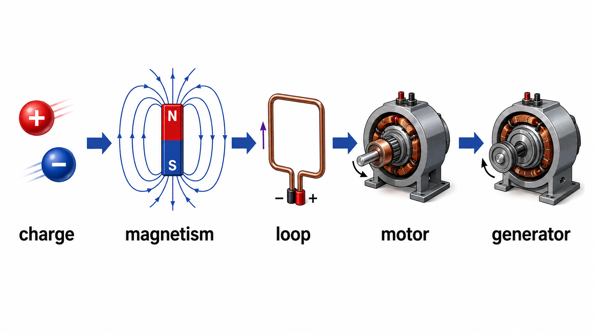
Question 1
How can electricity create motion?
Question 2
How can motion create electricity?
Main chain
charge → current → magnetic field → force → rotation
Lesson map
Key words
Read these words first. The same words will come back again and again.
| Word | Simple meaning |
|---|---|
| charge | electric property of matter; positive or negative |
| field | invisible area where a force can act |
| voltage | electric push |
| current | flow of electric charge |
| resistance | opposition to current |
| magnetic field | area where magnetic force acts |
| torque | turning force |
| commutator | switching contact in a DC motor |
| induction | making voltage by changing magnetic flux |
1. Electric charge
Electricity starts with charge. There are two types of electric charge: positive charge and negative charge.
Same charges repel. This means they push away from each other. Opposite charges attract. This means they pull toward each other.
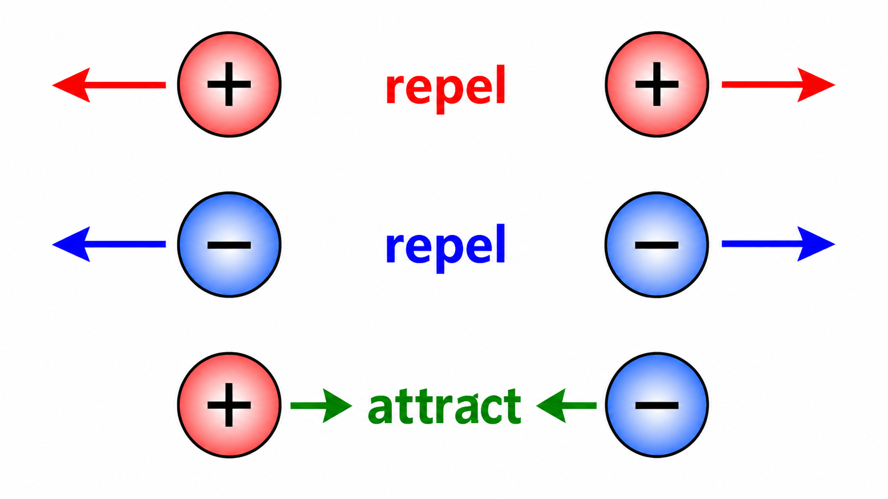
opposite charges attract
This is the first basic rule. We will use it later when we talk about electric fields, voltage, and current.
2. Coulomb's law
Coulomb's law describes the force between two electric charges.
F = electric force
q₁, q₂ = charges
r = distance between charges
k = constant
Meaning
- Bigger charges give bigger force.
- Bigger distance gives much smaller force.
- The force changes with the square of distance.
Today we do not need difficult Coulomb calculations. The important idea is simple: electric charges can create force at a distance.
3. Electric field
A charge creates an electric field around it. A field is an invisible area of influence. You cannot see the field directly, but you can see its effect.
The electric field can push or pull another charge. Field lines show the direction of force on a positive test charge.
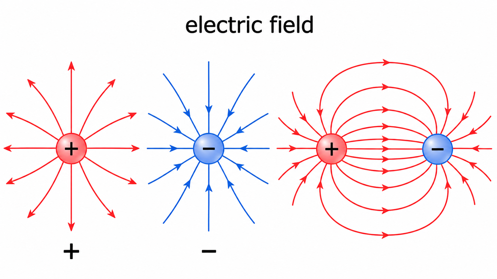
E = electric field
F = force
q = test charge
Simple meaning: charge creates electric field, and electric field creates force on other charges.
4. Voltage, current and resistance
Now we move from electrostatics to electric circuits. In electrostatics, charges can be at rest. In a circuit, charges move. Moving charge is current.
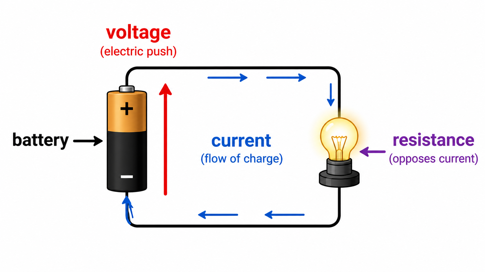
Voltage is electric push. A battery or power supply gives voltage.
Current is flow of electric charge through a wire.
Resistance opposes current. High resistance makes current smaller.
Memory sentence: Voltage pushes. Current flows. Resistance opposes.
5. Basic electrical formulas
These are the main calculation formulas for this lecture.
Current = charge / time.
Ohm's law. Voltage = current × resistance.
Electrical power = voltage × current.
Example
Voltage = 12 V
Current = 2 A
P = V × I = 12 × 2 = 24 W
Try it
Current = 3 A
Resistance = 4 Ω
Voltage = ?
Show answer
V = I × R = 3 × 4 = 12 V
6. Magnets and magnetic field
A magnet has two poles: north pole and south pole. Like magnetic poles repel. Opposite magnetic poles attract.
A magnet creates a magnetic field around it. Magnetic field lines show the direction of magnetic field. Outside a magnet, the field lines go from N to S.
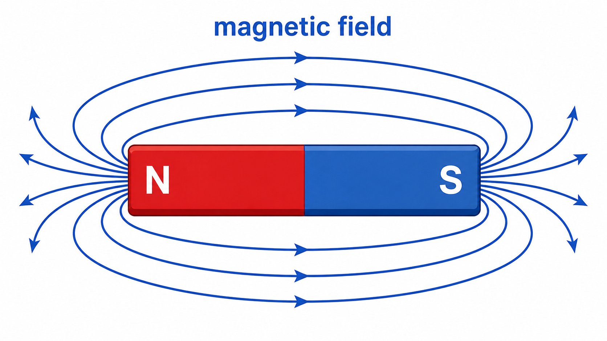
Electric motors need magnetic fields. Without a magnetic field, we cannot explain why a motor turns.
7. Current creates magnetic field
This is one of the most important ideas in the whole lecture.
When electric current flows in a wire, a magnetic field appears around the wire. The magnetic field lines make circles around the wire.
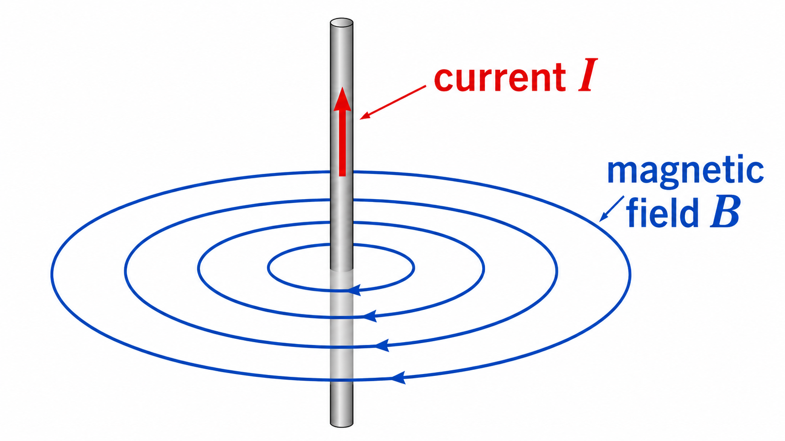
If the current becomes stronger, the magnetic field becomes stronger. If we change the direction of current, the direction of the magnetic field also changes.
8. Two parallel wires
Two wires with current can push or pull each other. This is not electrostatic force. It is magnetic force caused by current.
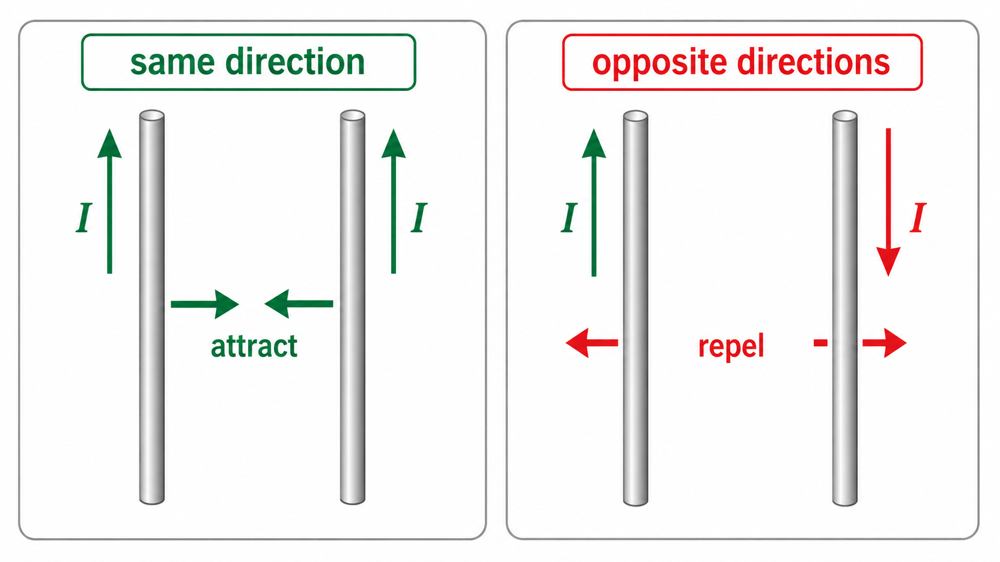
opposite current directions → repel
This idea is useful because a motor has many conductors and coils. Current in conductors creates magnetic fields, and these magnetic fields create forces.
9. Force on a moving charge
A moving charge in a magnetic field feels force. The direction of the force is perpendicular to the velocity and also perpendicular to the magnetic field.
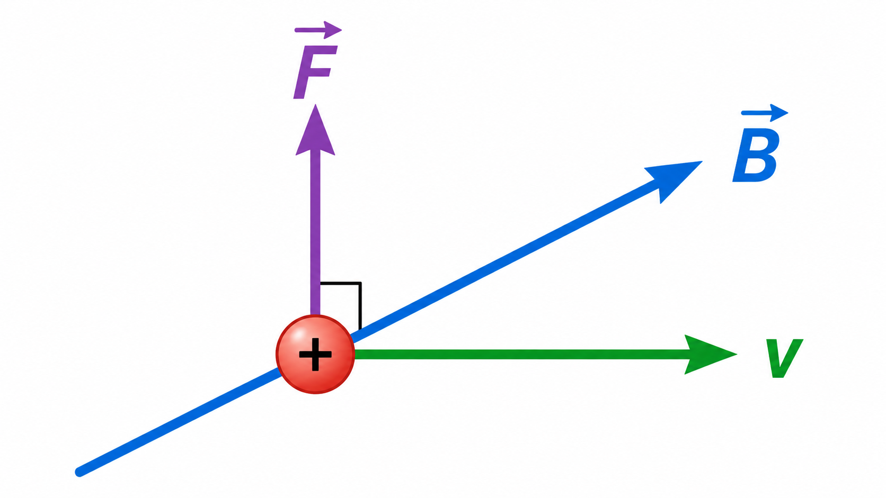
q = charge
v = velocity
B = magnetic field
θ = angle between velocity and magnetic field
Meaning: if the charge moves parallel to the magnetic field, the force is zero. If it moves perpendicular to the field, the force is maximum.
10. Force on a current-carrying conductor
A wire with current is full of moving charges. So a current-carrying conductor in a magnetic field also feels force.
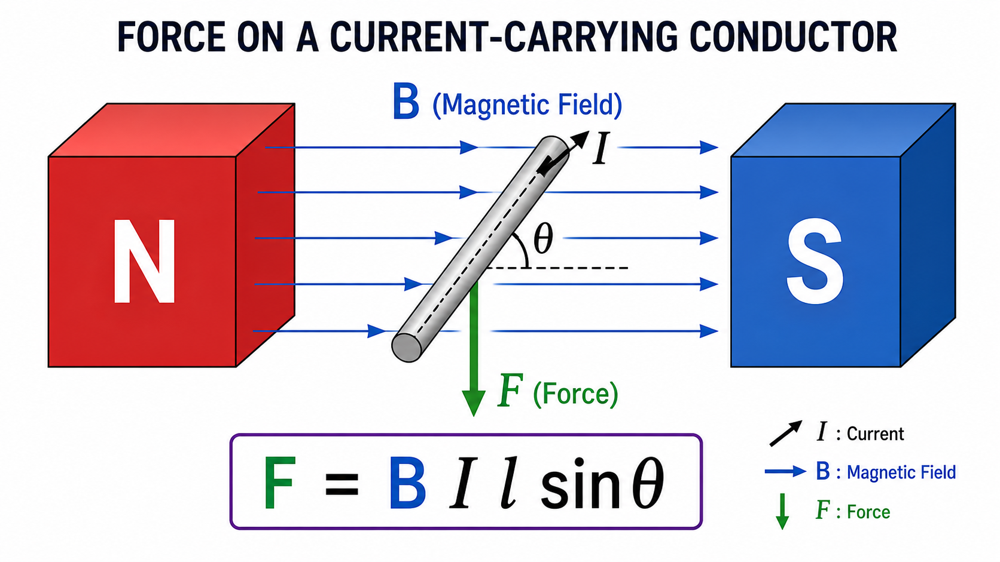
B = magnetic field
I = current
l = length of wire in the magnetic field
θ = angle between current direction and magnetic field
This is the main formula behind a simple electric motor.
Concept check
When is the force maximum?
Show answer
The force is maximum when the current direction is perpendicular to the magnetic field. Then sinθ = 1.
11. Current loop in a magnetic field
Now we can build the idea of a motor step by step.
A rectangular loop is placed between N and S magnetic poles. Current flows around the loop. The magnetic field creates forces on the two vertical sides of the loop.
One side feels force upward. The other side feels force downward. These opposite forces make a turning effect. This turning effect is called torque.
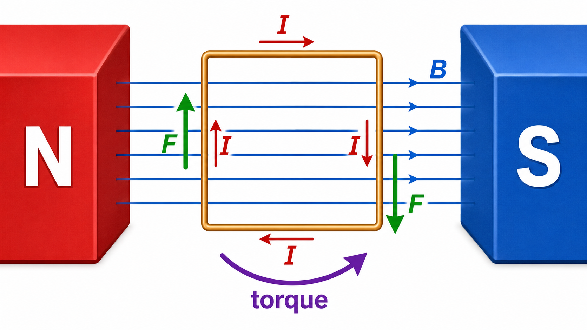
12. Torque on a loop
Torque means turning force. A current loop in a magnetic field feels torque.
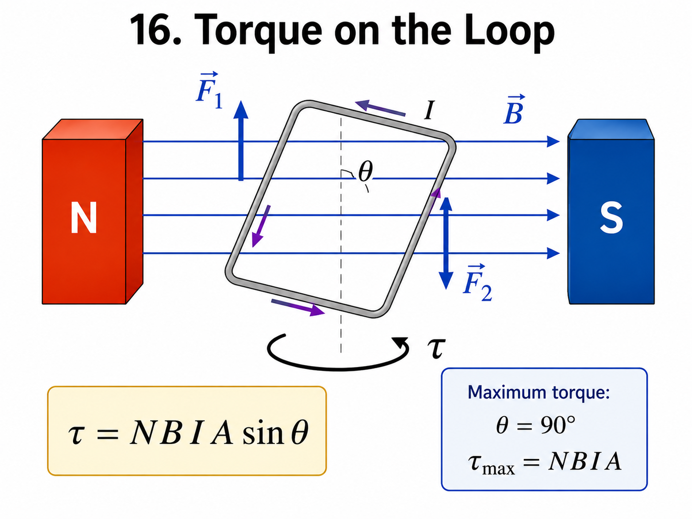
τ = torque
N = number of turns
B = magnetic field
I = current
A = area of loop
θ = angle
Meaning: more turns, stronger magnetic field, more current, and larger loop area give more torque.
13. Why a simple loop stops
A simple current loop is not enough for a real motor. At one position, the torque becomes zero. This is called a dead point.
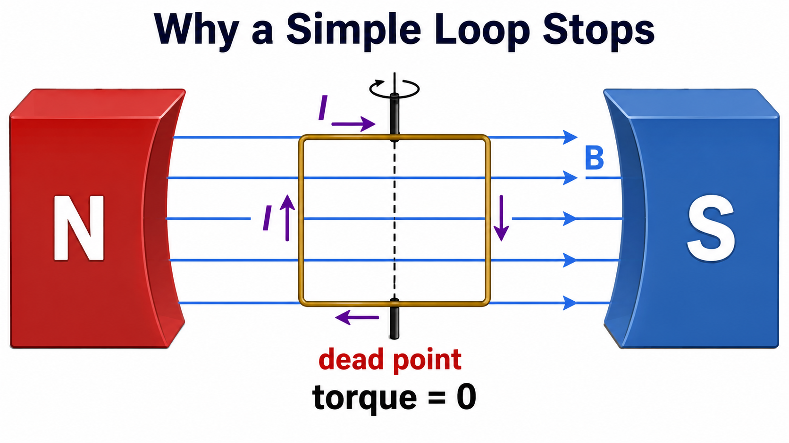
If nothing changes, the loop can stop or the torque direction can become wrong. So we need a switching system.
14. Split-ring commutator and brushes
The split-ring commutator solves the problem. It reverses the current every half turn.
Brushes touch the commutator and connect the moving rotor to the external circuit. The brushes stay still. The commutator rotates with the coil.
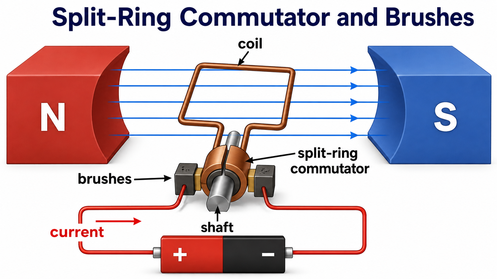
Because the current reverses at the right time, the torque keeps helping the same rotation direction.
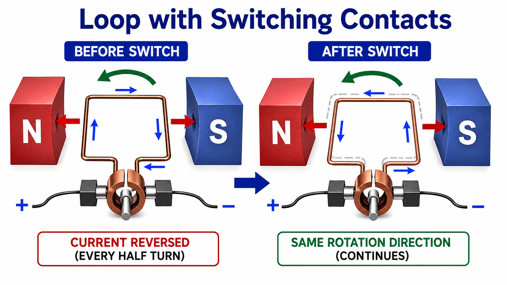
15. From one loop to many coils
One loop is useful for explanation, but real motors are not built from only one loop.
Real motors use several coils. More coils give smoother rotation, more stable torque, and better performance.
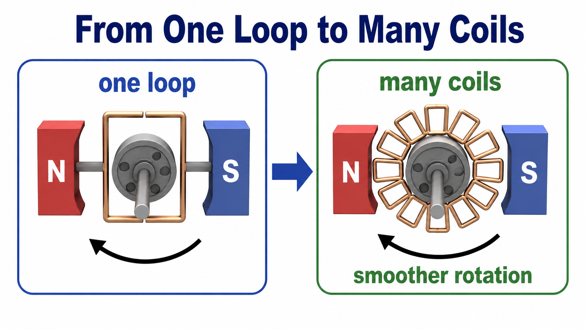
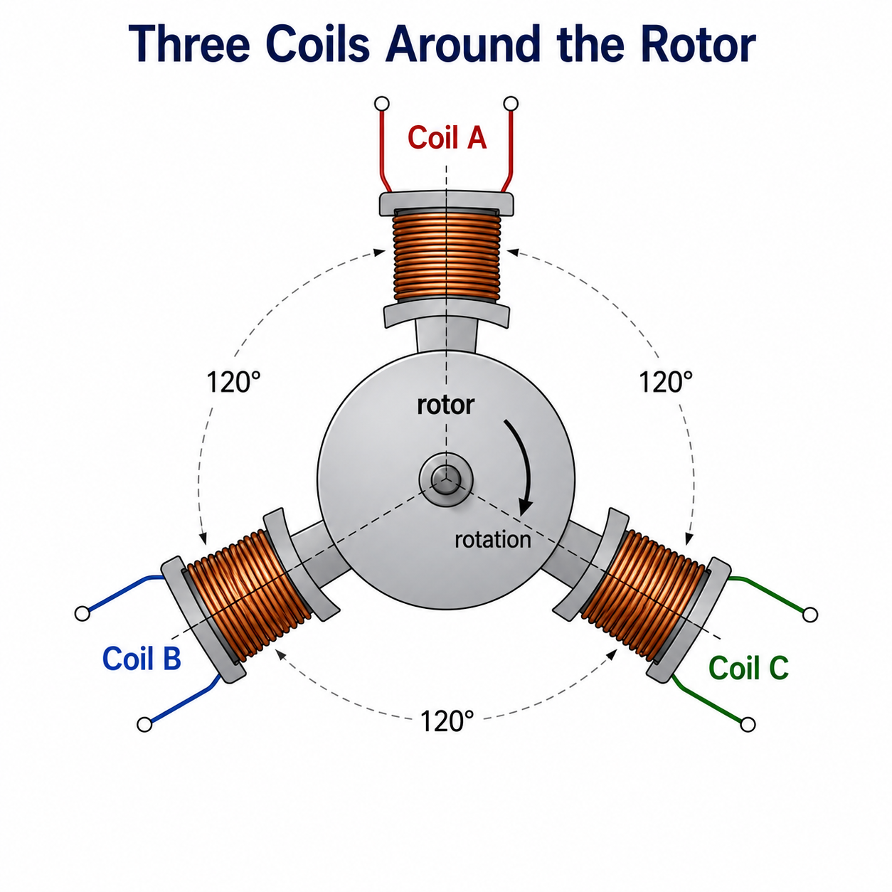
Three coils arranged 120° apart are an important step toward real rotating machines and also toward the idea of a rotating magnetic field.
16. DC motor structure
Now we can understand a DC motor as a real machine, not as a black box.
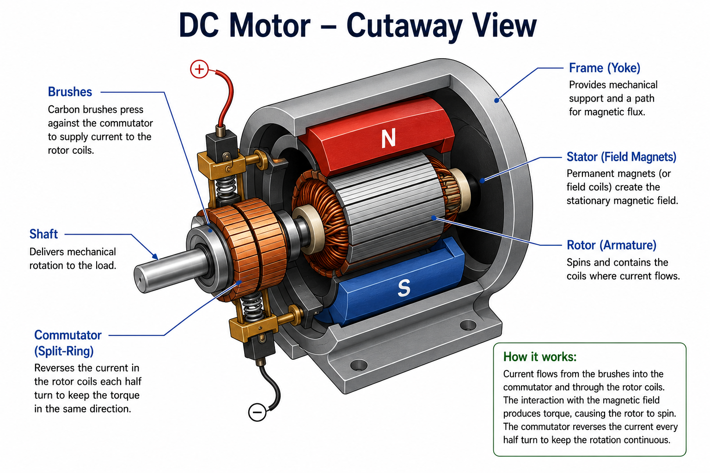
- Stator: fixed part that provides magnetic field.
- Rotor: rotating part with coils.
- Commutator: switching contact that reverses current.
- Brushes: electrical contacts to the rotating commutator.
- Shaft: gives useful mechanical rotation outside the motor.
17. Motor energy chain
The motor changes electrical energy into mechanical motion.
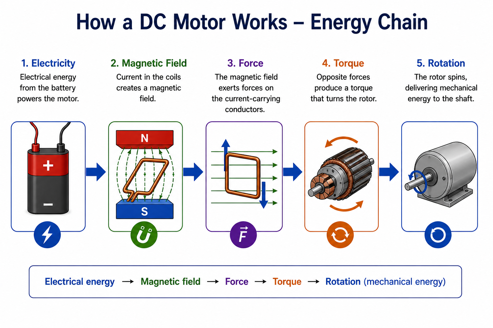
This chain is the main idea of an electric motor. In hospital and IT equipment, motors use this principle to move fans, pumps, beds, doors, and many other parts.
18. Faraday's idea
Now we ask the opposite question.
A motor changes electricity into motion. Can motion create electricity?
Faraday showed that a changing magnetic field can create voltage. More exactly: changing magnetic flux induces voltage.
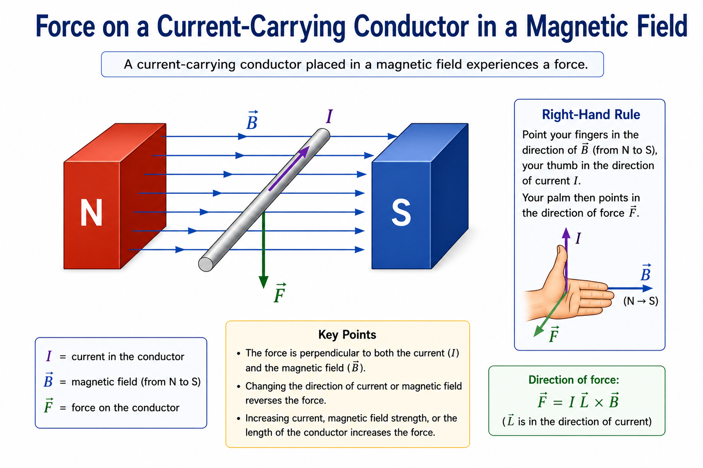
19. Magnetic flux
Magnetic flux means how much magnetic field passes through a surface or loop.
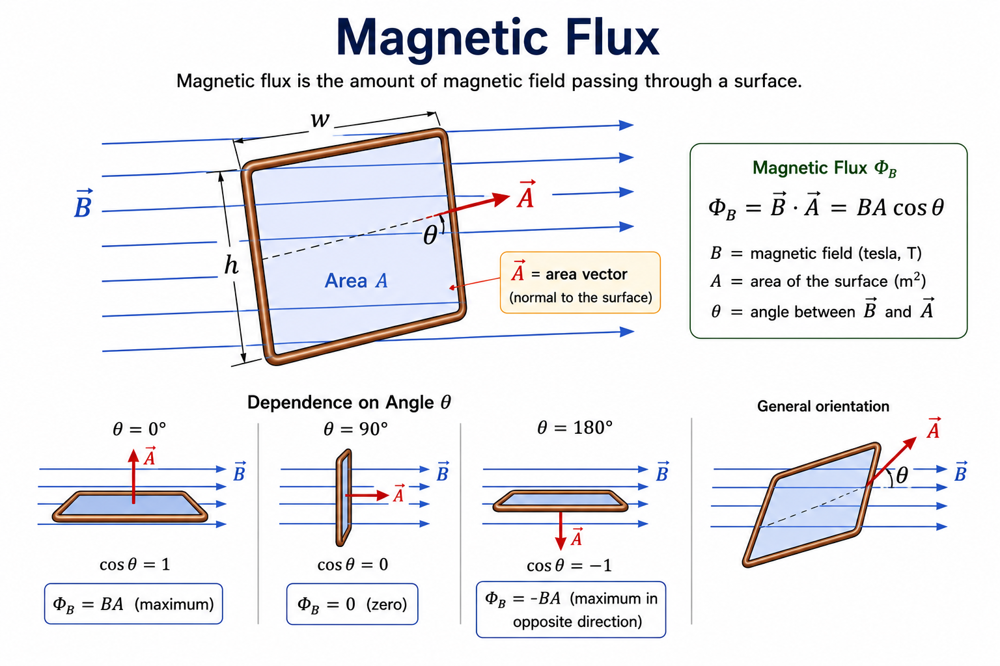
Φ = magnetic flux
B = magnetic field
A = area
θ = angle between magnetic field and area vector
When a loop rotates, the angle changes. When the angle changes, the flux changes. This is why a rotating coil can generate voltage.
20. Faraday's law
Faraday's law connects changing flux with induced voltage.
ε = induced voltage
Φ = magnetic flux
dΦ/dt = how fast the flux changes
Simple meaning: if magnetic flux changes quickly, induced voltage is larger. If magnetic flux does not change, there is no induced voltage.
The minus sign shows the direction rule. Today, we only need the main idea: changing flux makes voltage.
21. Generator principle
A generator uses Faraday's law. A coil rotates in a magnetic field. The magnetic flux through the coil changes. Voltage appears at the output.
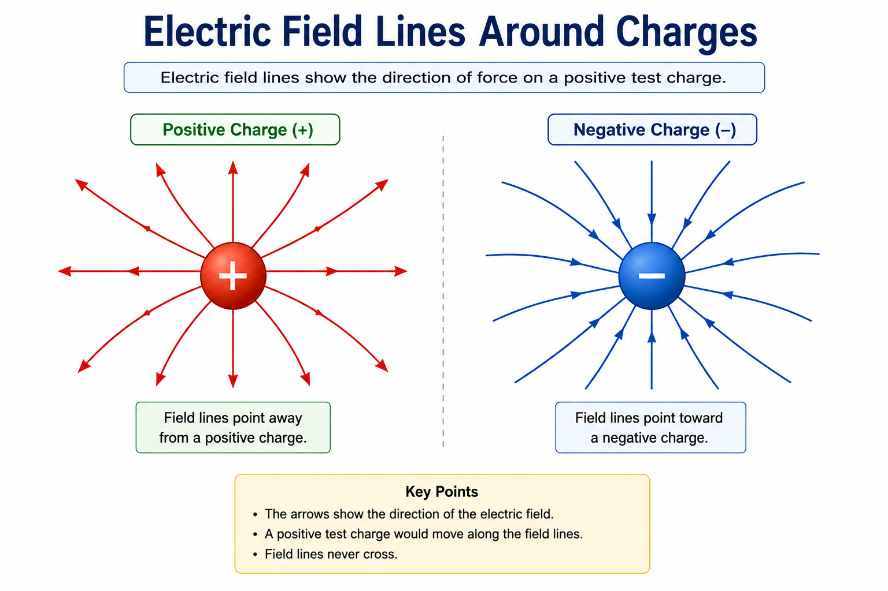
A generator changes mechanical motion into electrical energy.
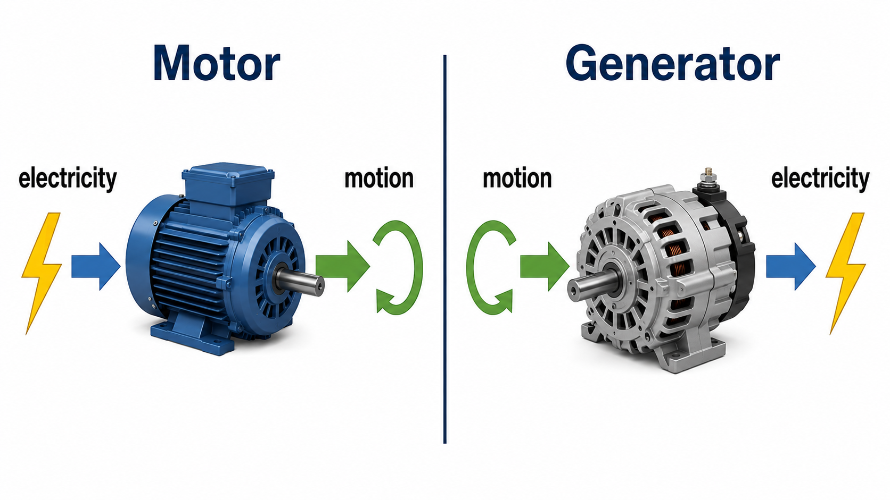
22. Tesla, AC and rotating magnetic field
Nikola Tesla is important here not as a myth, but as an engineer and inventor connected with AC power and rotating magnetic fields.
Three-phase AC currents can feed three coils placed around a stator. The currents are shifted in time. The result is a magnetic field that rotates smoothly.
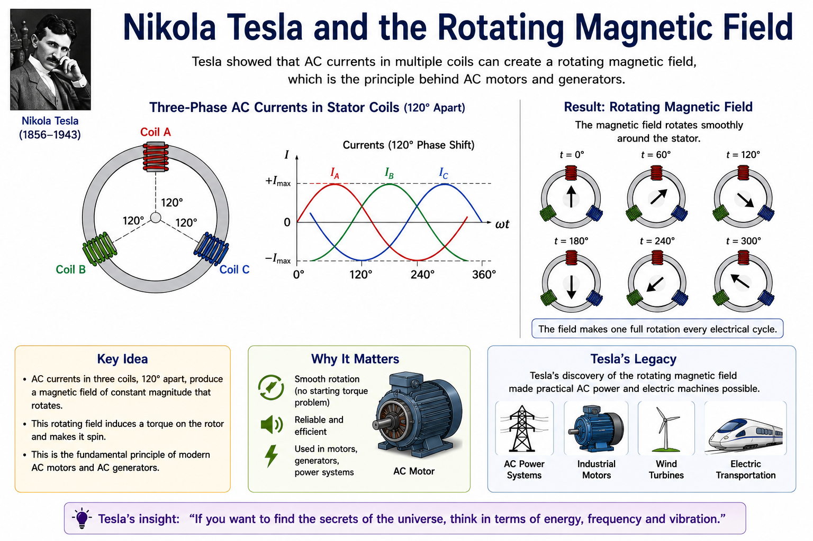
This idea made many practical AC motors possible. AC motors are used in industry, buildings, pumps, fans, and many power systems.
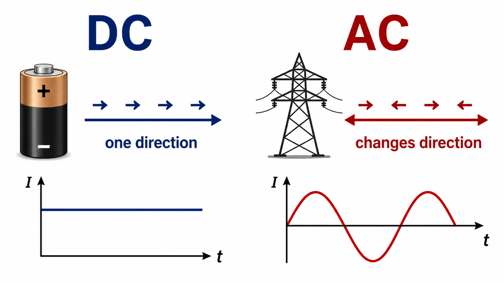
23. Applications in hospitals and IT
This lecture is not only theory. Motors and generators are everywhere in real medical and IT systems.
- Infusion pumps use motors to move liquid carefully.
- Hospital beds use motors or actuators to change position.
- Printers use motors to move paper and rollers.
- Cooling fans use motors to remove heat from electronics.
- Automatic doors use motors for safe movement.
- Backup power systems use generators to keep important equipment running.
24. Troubleshooting idea
If a motor or electric device does not work, do not panic. Think step by step.
- Is there power?
- Is the cable connected?
- Is the switch on?
- Is there a blown fuse or protection stop?
- Is the motor blocked?
- Is there overheating?
- Is there strange sound or vibration?
- If unsafe, stop and call a technician.
This is useful for future work with hospital and IT equipment.
25. Practice problems
Use the formulas. Work slowly. Write the formula first.
Problem 1 — Current
Q = 10 C
t = 2 s
I = ?
Show answer
I = Q / t = 10 / 2 = 5 A
Problem 2 — Ohm's law
I = 3 A
R = 4 Ω
V = ?
Show answer
V = I × R = 3 × 4 = 12 V
Problem 3 — Electrical power
V = 12 V
I = 2 A
P = ?
Show answer
P = V × I = 12 × 2 = 24 W
Problem 4 — Concept
Same current direction in two parallel wires: attract or repel?
Show answer
Attract. Same current direction in parallel wires gives attraction.
Problem 5 — Concept
What does the commutator do in a DC motor?
Show answer
It reverses the current every half turn, so the torque keeps the same rotation direction.
Problem 6 — Concept
What must change for Faraday induction to happen?
Show answer
Magnetic flux must change. Changing flux induces voltage.
26. Summary
- Charge creates electric field.
- Voltage pushes. Current flows. Resistance opposes current.
- Current creates magnetic field.
- A current-carrying conductor in a magnetic field feels force.
- A current loop feels torque.
- A commutator keeps a DC motor turning in the same direction.
- Many coils make smoother rotation.
- Changing magnetic flux induces voltage.
- Motor: electricity → motion.
- Generator: motion → electricity.
- Tesla's rotating magnetic field idea is important for AC motors.
The big engineering idea is simple: electricity and magnetism can create controlled motion, and controlled motion can create electricity.